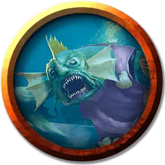

Верховная жрица сахуагинов
Sahuagin High Priestess
Средний Гуманоид (Сахуагин), законно-злой

Класс Доспеха 14 (природный доспех)
Хиты 71 (11к8 + 22)
Скорость 30 футов, плавая 40 футов
| мод | спас | ||
|---|---|---|---|
| СИЛ | 14 | +2 | +2 |
| ЛОВ | 12 | +1 | +1 |
| ТЕЛ | 14 | +2 | +2 |
| мод | спас | ||
|---|---|---|---|
| ИНТ | 12 | +1 | +1 |
| МДР | 16 | +3 | +6 |
| ХАР | 10 | +0 | +0 |
Навыки Восприятие +6, Проницательность +6
Чувства тёмное зрение 120 футов, пассивное Восприятие 16
Языки Сахуагинский
Опасность 5 (1800 опыта)
Бонус мастерства +3
Среда обитания Побережье, Под водой
Особенности
Кровавое бешенство. Верховная жрица совершает с преимуществом броски рукопашных атак по существам, у которых хиты ниже максимума.
Ограниченная амфибийность. Верховная жрица может дышать и воздухом и под водой, но чтобы не задохнуться, ей нужно погружаться в воду хотя бы раз каждые 4 часа.
Акулья телепатия. Верховная жрица может магическим образом командовать всеми акулами, находящимися в пределах 120 футов от нее, при помощи ограниченной телепатии.
Использование заклинаний. Верховная жрица является заклинателем 7-го уровня. Ее базовой характеристикой является Мудрость (Сл спасброска от заклинания 14, +6 к попаданию атаками заклинаниями). У неё подготовлены следующие заклинания жреца:
• Заговоры (неограниченно): указание [guidance], починка [mending], сопротивление [resistance], чудотворство [thaumaturgy];
• 1 уровень (4 ячейки): благословение [bless], направляющий снаряд [guiding bolt], обнаружение магии [detect magic];
• 2 уровень (3 ячейки): божественное оружие [spiritual weapon] (трезубец), удержание личности [hold person];
• 3 уровень (3 ячейки): множественное лечащее слово [mass healing word], проклятие [bestow curse], языки [tongues];
• 4 уровень (1 ячейка): изгнание [banishment].
Действия
Мультиатака. Верховная жрица совершает две атаки своим Зубастым посохом или одну атаку Укусом и одну атаку Когтями.
Зубастый посох. Рукопашная атака оружием: +5 к попаданию, досягаемость 5 футов, одна цель. Попадание: 11 (2к8 + 2) колющего урона.
Укус. Рукопашная атака оружием: +5 к попаданию, досягаемость 5 футов, одна цель. Попадание: 4 (1к4 + 2) колющего урона.
Когти. Рукопашная атака оружием: +5 к попаданию, досягаемость 5 футов, одна цель. Попадание: 4 (1к4 + 2) рубящего урона.
Описание
Верховная жрица сахуагинов - самая набожная и свирепая из всех последовательниц Секолы. Вооруженную посохом, усеянным зазубренными акульими зубами, ее можно увидеть проводящей темные ритуалы в "Финальном противнике".